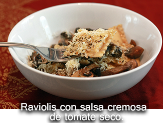
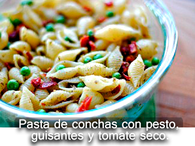
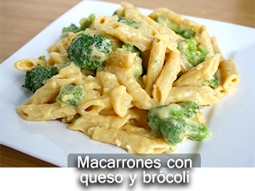

<section id="pastas" data-transition="fade">

     <!-- Encabezado -->
        <header>    
                <nav>
                        <button data-view-aside="menu" data-icon="menu"></button>
                </nav>
                <nav class="on-right">
                        <button data-view-section="menus" data-icon="arrow-left"></button>    
                </nav>
                       
        </header>

    <!-- Cuerpo -->
        
    	<article id="pastas-article" class="active indented">

            	<ul class="horizontal scroll" style="heigt">

                    
                    
                    <!--Raviolis con salsa cremosa de tomate seco-->
					
                    <!--Pasta de conchas con pesto, guisantes y tomate seco-->
					
					<!--Macarones con queso y brocoli-->
					


				</ul>

		</article>		

</section>